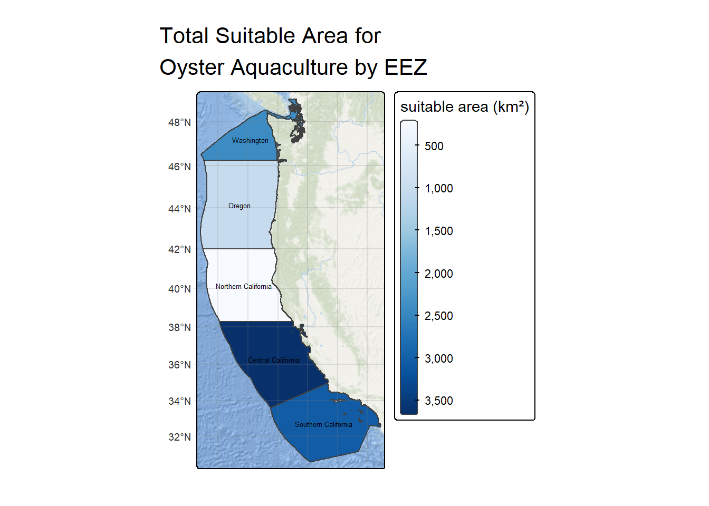
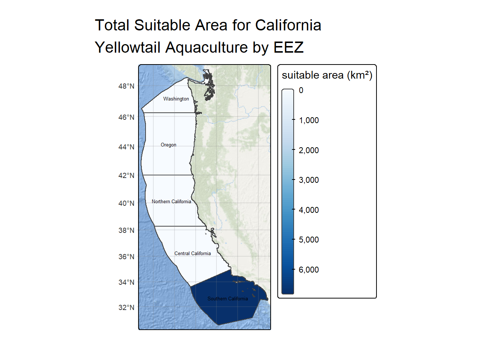

The following analysis was completed as a homework task for EDS223 in the Bren MEDS program github link.
Aquaculture as a means of protein food production is increasingly necessary to support global nutritional demand. Done right, growing seafood above other animal proteins has the potential to reduce carbon emissions from other sources such as cattle (Zhang et al. 2024). Thus, it is critical to understand the complex dynamics that contribute to sustainable aquaculture practices and that might influence site suitability.
Determining potential West Coast aquaculture areas
Siting aquaculture operations requires identifying marine areas where environmental conditions align with the physiological tolerance of grown species. Conditions are highly variable over space and time, so determining site suitability is a critical geospatial problem.
This analysis addresses the question of how to use oceanographic temperature and depth data to determine areas in the U.S. West Coast Exclusive Economic Zone (EEZ) where species-specific environmental suitability factors overlap, producing a spatial estimate of overall aquaculture suitability.
Output
The initial data processing and analyses were conducted based on a given range of suitable temperature and maximum depth conditions for oyster aquaculture. The final workflow includes a function that transforms inputs of maximum and minimum temperature and depth conditions for any given species into a map of total suitable area in each WC EEZ, and the name of the most suitable region.
Data access and information
For the analyses, we utilized publicly available sea surface temperature (SST) and bathymetry data from the Pacific, and West coast EEZ region data.
Annual average SST data (2008-2012) was accessed from NOAA Coral Reef Watch. These and depth profiles (GEBCO) were accessed as raster images.
EEZ region data were accessed as a geographic shapefile.
Data import
One unique aspect of processing geospatial information in R/R Studio is the need to consider package compatibility. In recent years {terra} has grown in popularity, particularly for its compatibility with {tidyterra}, from which the functions resemble familiar {tidyverse} ones. Ocean condition files were stored as .tif files, which are imported as rasters.
Average SST raster layers were stacked upon reading in the data, with one layer representing average values from its corresponding year.
EEZ spatial data were imported as a simple feature object using {sf}. Knowing that these objects were intially read from different packages was something that was kept in mind throughout analysis in the case that package incompatibility resulted in error.
Code
# Load in data fileseez <-read_sf(here("posts", "eez_aquaculture", "data", "wc_regions_clean.shp"))depth <-rast(here("posts", "eez_aquaculture", "data", "depth.tif"))# Combine sst rasters into a stacksst <-rast(c((here("posts","eez_aquaculture","data","average_annual_sst_2008.tif" )), (here("posts","eez_aquaculture","data","average_annual_sst_2009.tif" )), (here("posts","eez_aquaculture","data","average_annual_sst_2010.tif" )), (here("posts","eez_aquaculture","data","average_annual_sst_2011.tif" )), (here("posts","eez_aquaculture","data","average_annual_sst_2012.tif" ))))
Data processing
The ultimate goal of this workflow was to produce a spatial object to find areas that are suitable for a given species based on surface temperature and total depth.
The first step in a workflow with multiple spatial objects should be to check if coordinate reference systems (CRS) match between datasets. In order to eventually stack rasters, the CRS, spatial extent, and resolution of cells must match.
In this stage of analysis I used a warning and if-else statement to ensure that the depth and SST data matched the same CRS as that of EEZ zones.
Code
# Check CRS and fix if no matchif (crs(eez) ==crs(depth) &crs(eez) ==crs(sst) &crs(depth) ==crs(sst)){print("CRS matches on all data")} else{warning("CRS does not match between all datasets")crs(depth) <-crs(eez)crs(sst) <-crs(eez)}
To get an estimate of the average sea surface temperature across multiple years, the average was taken across the stacked raster object. This workflow also included converting temperature from Kelvin to Celsius, which was achieved by subtracting 273.15 from all cell values in the averaged raster.
Code
# Create raster of average SST valuesmean_sst <-mean(sst)mean_sst <- mean_sst -273.15
In the next step to combine surface temperature data and depth data, we needed to match the spatial extent for both rasters. This is easily achieved by cropping an object to the extent of another.
Code
# Crop by the extent of the sstsst_ext <-ext(mean_sst)depth_crop <-crop(depth, sst_ext)
Finally, the spatial resolutions needed to match between the bathymetry data and the mean sst data. The method applied here was resample to reorganize the cropped depth raster cells to match the resolution of the temperature data.
Code
depth_crop_res =resample(depth_crop, mean_sst)
You can easily check if all three necessary elements match by seeing if raster layers can stack, confirming that the CRS, extent, and resolution are the same.
Code
# Check that bathymetry layer can stack with mean_sstif (crs(depth_crop_res) ==crs(mean_sst) &all(res(depth_crop_res)) ==all(res(mean_sst)) &ext(depth_crop_res) ==ext(mean_sst)){print("Rasters can stack")} else{warning("Rasters do not share all necessary attributes")}
[1] "Rasters can stack"
Creating mask of suitable cells for a given species
The next step in the workflow was reclassifying both depth and sst to define areas as suitable or unsuitable for aquaculture.
Because reclassified cells are now binary, raster cells that both were classified as suitable (share the value = 1) are found by multiplying the rasters together. The shared cells will return “suitable” only for cells where both depth and temperature are classified as suitable originally.
Code
# Multiply rasters to find where suitable conditions overlapsuitable <- sst_reclass*depth_reclass
Quantifying the total area, and thus the total number of suitable cells for oyster was necessary. The suitability information from the reclassified raster was joined to EEZ data using the methods mask() and extract() which allowed observations to be summarized as a dataframe.
Code
# Find the total suitable area within each eez# Mask eez by suitable cells in West Coast regionsuitable_eez <-mask(suitable, eez)# Extract values based on eez zoneszonal <-extract(suitable_eez, eez)# Return the count of raster cells that are suitable in each eezzonal_count <- zonal %>%group_by(ID) %>%summarise(count =sum(mean, na.rm =TRUE)) %>%mutate(ID =recode( ID,"1"="Washington","2"="Oregon","3"="Northern California","4"="Central California","5"="Southern California" )) %>%rename("Region"= ID)# Summary tablekableExtra::kable(zonal_count, caption ="Total count of raster cells classified as suitable for oyster by West Coast EEZ area", align ="c" )
Total count of raster cells classified as suitable for oyster by West Coast EEZ area
Region
count
Washington
68
Oregon
12
Northern California
214
Central California
172
Southern California
166
The dimensions of cells containing suitability data were multiplied by the number of suitable cells to quantify the actual area (km²) contained within suitable areas. Similarly to how the total number of suitable cells was found, the sum of suitable area by EEZ area was calculated. This information was joined onto the original EEZ data in order to be able to map EEZ zones by suitable area.
Code
# Multiply the number of suitable cells by the dimensions of each cell itself to find areaeez_area <- suitable_eez *cellSize(suitable_eez, unit ='km')# Pull out values by eez zone zonal_area <-extract(eez_area, eez)# Summarize total area by zonezonal_area <- zonal_area %>%group_by(ID) %>%summarize(area =sum(mean, na.rm =TRUE)) %>%rename('rgn_id'= ID)# join area information to eez zone informationeez_zone_areas <-left_join(eez, zonal_area, by ='rgn_id')
Final visualization output
The final steps in the summarized workflow was to visualize the total suitable area by EEZ for a species of interest, and to select the best EEZ for aquaculture of that product.
Code
# Create map with continuous area scaletm_shape(eez_zone_areas) +tm_polygons(fill ='area',fill.scale =tm_scale_continuous(values ="brewer.blues"), fill.legend =tm_legend(title ="suitable area (km²)")) +tm_basemap("Esri.OceanBasemap") +tm_title(text ="Total Suitable Area for Oyster Aquaculture by EEZ", width =10) +tm_layout(component.autoscale=FALSE) +tm_graticules(alpha =0.2) +tm_basemap("Esri.OceanBasemap") +tm_text(text ="rgn", size =0.4)

Code
# Create subset of data frame to pull out most suitable EEZeez_table <- eez_zone_areas %>%select(rgn, area) %>%st_drop_geometry() %>%slice_max(order_by = area, n =1) %>%rename("Region"= rgn, "Area (km²)"= area)# Print in kable formattingkableExtra::kable(eez_table, caption ="Most Suitable West Coast EEZ for Oysters", align ="c")
Most Suitable West Coast EEZ for Oysters
Region
Area (km²)
Central California
3656.82
The output of a workflow specific to oysters demonstrates that the central California coast is most suitable for oyster aquaculture with a total suitable area of 3656 km².
This output was used to compare to that returned by a general workflow function built in the next step.
Generalized function
To create a function that takes in species specific parameters, the function had to take arguments for eez data, depth and temperature, and the range values for temperature and depth of a selected species.
The function begins at the CRS checking step of the workflow above, and all species specific inputs are replaced by parameters from the function.
Code
# Generalized functioneez_area_zone <-function(eez_data, depth_data, sst_data, min_temp, max_temp, min_depth, max_depth, species_name){# Make sure all CRSs match with the EEZ dataif (crs(eez_data) !=crs(depth_data) |crs(eez_data) !=crs(sst_data) |crs(depth_data) !=crs(sst_data)){crs(depth_data) <-crs(eez_data)crs(sst_data) <-crs(eez_data)}# Find the mean sea surface temperature values and convert to Celsius mean_sst <-mean(sst_data) mean_sst <- mean_sst -273.15# Crop depth data to the extent of the sea surface temperature data# Crop by the extent of the sst sst_ext <-ext(mean_sst) depth_crop <-crop(depth_data, sst_ext)# Re sample the depth data to match the resolution of sst data depth_crop_res <-resample(depth_crop, mean_sst)# Create reclassification matrices sst_rcl <-matrix(c(-Inf, min_temp, 0, min_temp, max_temp, 1, max_temp, Inf, 0), ncol =3, byrow=TRUE) depth_rcl <-matrix(c(-Inf, max_depth, 0, max_depth, min_depth, 1, min_depth, Inf, 0), ncol =3, byrow=TRUE)# Reclassify raster data with matrices sst_reclass <-classify(mean_sst, rcl = sst_rcl) depth_reclass <-classify(depth_crop_res, rcl = depth_rcl)# Find area where there is overlap in suitability suitable_cells <- sst_reclass*depth_reclass# Mask EEZ data by suitable cells in West Coast region suitable_eez <-mask(suitable_cells, eez_data)# Get EEZ data for only suitable EEZ areas zonal <-extract(suitable_eez, eez_data)# Find the suitable area contained by each cell eez_area <- suitable_eez *cellSize(suitable_eez, unit ='km')# Extract the total area from EEZ zones zonal_area <-extract(eez_area, eez_data)# Find the total suitable area in each EEZ zone zonal_area <- zonal_area %>%group_by(ID) %>%summarize(area =sum(mean, na.rm =TRUE)) %>%rename('rgn_id'= ID)# Join EEZ data with suitable area data by regioneez_zone_areas <-left_join(eez_data, zonal_area, by ='rgn_id')# Plot the species print(tm_shape(eez_zone_areas) +tm_polygons(fill ='area',fill.scale =tm_scale_continuous(values ="brewer.blues"), fill.legend =tm_legend(title ="suitable area (km²)")) +tm_title(text =paste0("Total Suitable Area for ", species_name, " Aquaculture by EEZ"), width =10) +tm_layout(component.autoscale=FALSE) +tm_graticules(alpha =0.2) +tm_basemap("Esri.OceanBasemap") +tm_text(text ="rgn", size =0.4) )# Create subset of data frame to pull out most suitable EEZeez_table <- eez_zone_areas %>%select(rgn, area) %>%st_drop_geometry() %>%slice_max(order_by = area, n =1) %>%rename("Region"= rgn, "Area (km²)"= area)# Print in kable formattingkableExtra::kable(eez_table, caption =paste0("Most Suitable West Coast EEZ for ", species_name), align ="c")}
I then used the function to cross check the original output from oyster data against what the function returns.
Code
# Compare output from function to original mapeez_area_zone(eez_data = eez, depth_data = depth, sst_data = sst, min_temp =11,max_temp =30,min_depth =0, max_depth =-70, species_name ="Oyster")
Most Suitable West Coast EEZ for Oyster
Region
Area (km²)
Central California
3656.82
The output from the function matched, so the next step was to select a different species to apply the function to.
California Yellowtail (also known as Amberjack, Hamachi, or Yellowtail Jack) are large pelagic finfish typically caught using drift gillnets. In recent years they have been increasingly studied as a potential aquaculture species due to an existing market with good return value and their relatively high larval survival rates (Rotman et al. 2021). Their maximum temperature range falls between 15°C and 22°C. Their range as a pelagic fish can be anywhere between right below the surface to approximately 300 meters deep. Their depth range caused me to believe that it might be the case that many areas along the West coast would appear to be suitable for Yellowtail.
Code
# Use function for California Yellowtail aquaculture zoneeez_area_zone(eez_data = eez, depth_data = depth, sst_data = sst, min_temp =15,max_temp =22,min_depth =-3, max_depth =-300, species_name ="California Yellowtail")

Most Suitable West Coast EEZ for California Yellowtail
Region
Area (km²)
Southern California
6742.493
The results of the map and total suitable area within the most optimal EEZ compared to our oyster example show a large decrease in suitable area across all zones, and that only Southern California was suitable at all.
Conclusions
Thinking about our two input data sources that determine suitability, we were only able to look at annually averaged sea surface temperature over 4 years. As Yellowtail are a pelagic fish, that likely do not spend a majority of their time at the surface, our temperature data is extremely limited in its ability to predict suitability beyond the surface. Further, as these data are an annual average, seasonal temperature fluctuations and mixing are not represented within the data. Yellowtail are highly mobile fish, with a range between British Columbia and Mazatlán, Mexico (California Department of Fish and Wildlife). Age is a significant factor in thermal tolerance, as older fish are better able to tolerate cold conditions. Thus, the temporal resolution of the data and the lack of a temperature depth profile are a large constraint on the predictive value of this simplified analysis, which is more relevant to surface dwelling species such as sedentary rocky intertidal organisms like oysters.
References
Literature
California yellowtail Amberjack seafood recommendation. Seafoodwatch.org. https://www.seafoodwatch.org/recommendation/amberjack/california-yellowtail-57716
Rotman, F., Stuart, K., Silbernagel, C., & Drawbridge, M. (2021). The status of California yellowtail Seriola dorsalis as a commercially ready species for marine U.S. aquaculture. Journal of the World Aquaculture Society, 52(3), 595–606. https://doi.org/10.1111/jwas.12808
California Department of Fish and Wildlife. Yellowtail Enhanced Status Report. CA Marine Species Portal. https://marinespecies.wildlife.ca.gov/yellowtail/the-species/
Zhang, Z., Liu, H., Jin, J., Zhu, X., Han, D., & Xie, S. (2024). Towards a low-carbon footprint: Current status and Prospects for Aquaculture. Water Biology and Security, 3(4), 100290. https://doi.org/10.1016/j.watbs.2024.100290
@online{bonnet2025,
author = {Bonnet, Nathalie},
title = {Predicting {Suitable} {Aquaculture} {Zones} with {EEZ} Data
and {Water} {Conditions}},
date = {2025-12-12},
langid = {en}
}
For attribution, please cite this work as:
Bonnet, Nathalie. 2025. “Predicting Suitable Aquaculture Zones
with EEZ Data and Water Conditions.” December 12, 2025.
![]()